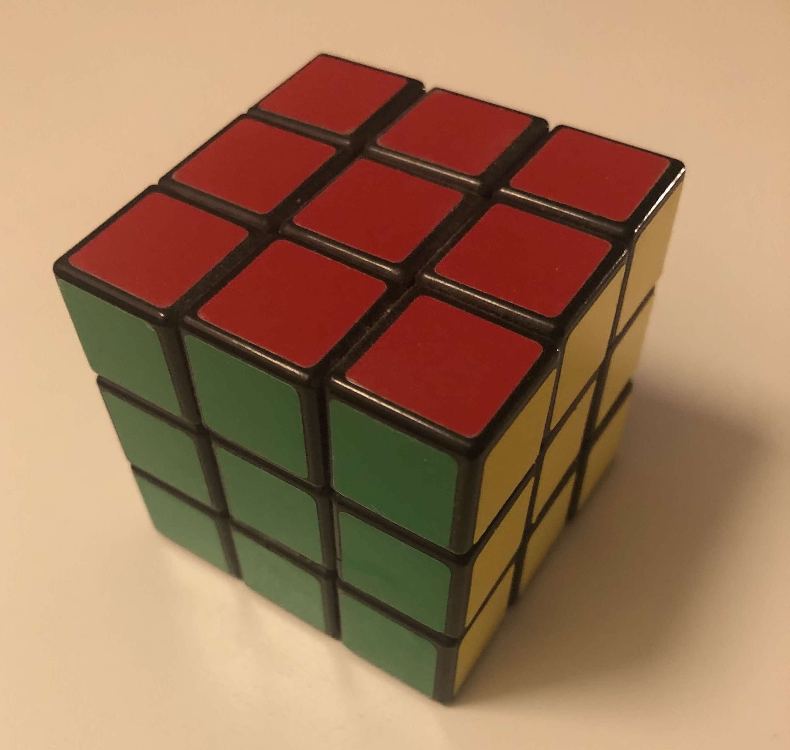
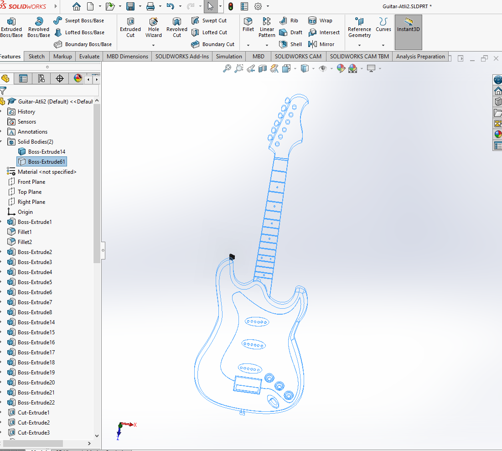
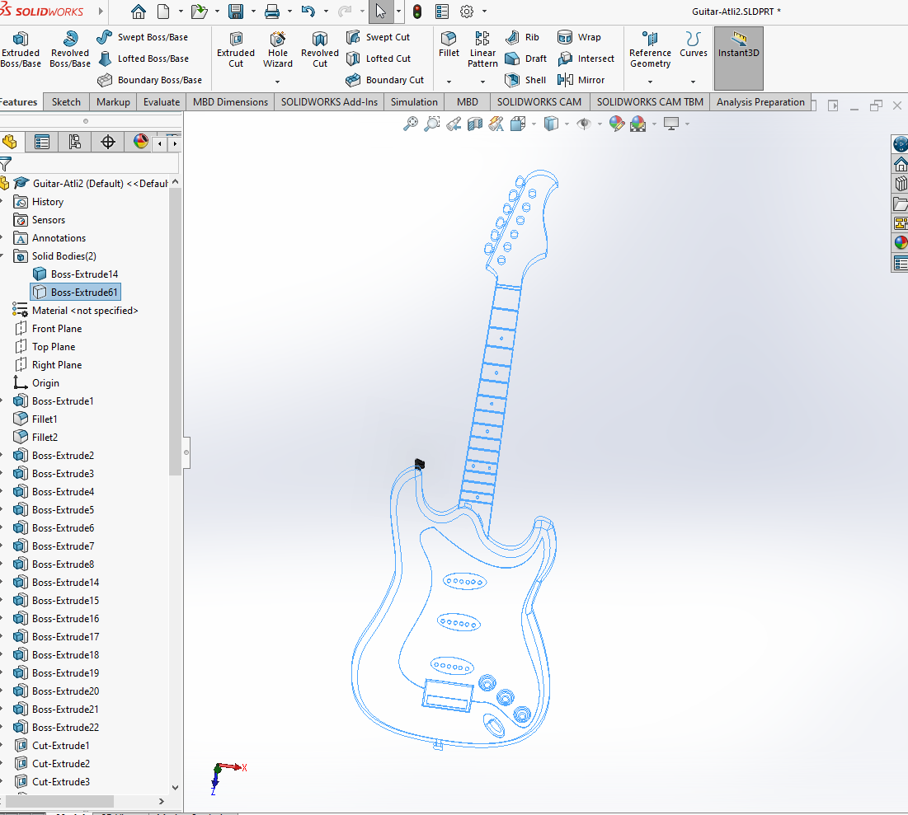

3D prentun og 3D skönnun
VERKEFNI 3 Í TÖLVUSTUDDRI FRAMLEIÐSLU
Lýsing á verkefni
Einstaklingsverkefni:
Hannaðu módel fyrir 3D prentun sem ekki væri hægt að framkvæma með frádráttar framleiðslu (addative vs subtractive). Prentaðu hlutinn (max 100g af plasti skv. slicer).
Prentararnir sem eru til í HÍ eru:
Prusa MK3+, Creality CR-10 MAX, Ultimaker 2+.
Í Fab Lab Reykjavík eru:
2x Ultimaker 3 og 2x Prusa MK3+
3D Skannaðu einhvern hlut, t.d. með photogrammetríu. Sýndu framvinduna á heimasíðunni þinni.
Hópaverkefni:
Veljið 3D prentara og ákvarðið hönnunar reglur / þvinganir (t.d þörf á stuðning, veggþykkt, prentunar átt, yfirborðs gæði, innfylli...). Skráið á sameiginlegu vefsvæði.
3D skönnun
Markmið fyrsta verkefnisins í verkefni 3 í Tölvustuddri framleiðslu var að framkvæma 3D skönnun á til dæmis styttu, fjarstýringu eða í raun bara því sem manni langaði til. Ég valdi Rubix-cube sem ég bjó til þegar ég var unglingur. Fyrsta skrefið var að hlaða niður viðeigandi forriti og það sem varð fyrir valinu var Scaniverse. Þegar það var búið að hlaða því niður á símann, þá var ekkert eftir nema að taka myndir af kubbnum og forritið býr til 3D módel af honum og eins er gefið myndband af 3D skannaða kubbnum. Hægt er að sjá það á myndunum, þar er kubburinn sem ég notaði til að 3D skanna og svo í myndbandinu hér fyrir neðan er skönnunin tilbúin.
Ég prufaði líka að nota annað forrit - Polycam
Það kom ekki jafnvel út á neinn hátt og skönnunin með Scaniverse en þetta er sama ferli og með Scaniverse. Saman hvað ég reyndi þá vildi forritið ekki taka nema 3 hliðar af kubbnum. Alveg sama þá ég tæki myndband eða myndir af öllum hliðum nema botninum. Niðurstöðurnar má sjá hér fyrir neðan:


Undirbúningsvinna og markmið
Markmið verkefnis 3 í Tölvustuddri framleiðslu var að hanna módel fyrir 3D prentun sem ekki væri hægt að framkvæma með frádráttar framleiðslu og prenta hlutinn sem mátti vera max 100g af plasti. Ég byrjaði á því að finna hugmyndir til að teikna. Ég leitaði lengi og vel eftir einhvers konar innblástri á netinu og ákvað ég á endanum á því að hanna módel af gítar og róbot en ég ákvað að prenta frekar út gítarinn. Ég ákvað að gera gítar (og róbot) vegna þess að ég fann ekkert sem ég gæti notað eða vantaði. Módelið var teiknað í SolidWorks. Áður en ég byrjaði að teikna módelið var 3D prentari valinn og hönnunarreglur/þvingarnir ákvarðaðar, þetta var hópverkefni sem ég gerði. Þar sást að prentarinn höndlaði nánast allt frábærlega nema overhang, það er þegar að hann er að teikna hallandi boga án stuðnings. Teikningin mín var töluvert auðveldari í smíð og fór því prentarinn létt með hana.
Að teikna hlutinn í Solidworks
Ég teiknaði gítarinn og róbotinn upp með því að nota myndir af hlutunum, eins og hægt er að sjá hér að neðan.


Ég teiknaði útlínurnar á gítarnum bæði með line(línur) og svo spline en spline er á ensku lýst sem: "a continuous curve that passes through discrete points specified by the user" en þetta er hægt á sjá á einni myndinni hér að neðan þar sem bláar línur eru utanum body-ið á gítarnum. Ég vann mig svo áfram og gerði hálsinn á gítarnum og þaðan fór ég í að vinna í pinnunum og stillingunum fyrir strengina. Því næst fór ég í að teikna plötuna og stillingar takkana á bodyinu. Ég endaði svo á að gera smáatriðin sem eru pluggið fyrir snúru, klemman fyrir strengina, nut, frets, position markers og festingar fyrir ól. Ég ákvað að hafa bakhliðina jafna, þar meina ég að ég var með hálsinn á gítarnum "dýpri" til að auðvelda prentun og til að hann væri sterkari. Annars hefði myndast óþarfa spenna á hálsinn og hann mögulega brotnað á endanum. Ég ákvað líka að sleppa að teikna sjálfa stengina þar sem það hefði eyðilagt heildarmyndina og verið vesen í prentun. Ég mun því annað hvort nota tvinna eða teikna stengina á í lokinn. En þegar ég var búinn að teikna allt og var orðinn frekar sáttur með gítarinn extrud-aði það sem ég var ekki þegar búinn að extrud-a og setti fillet og þess háttar til að allt myndi líta betur út. Sömu sögu má segja með robotinn nema þar þurti ég ekki að nota jafn mikið spline en ég notaði mikið mirror(speglun), revolve(add or remove material by revolving one or more profiles around a centerline) og bjó til ný plön til að geta teiknað utan á body-ið en þar sem body-ið er curved þá þurfti ég að nota wrap feature sem vefur teikninguna utanum body-ið en svo ef ég hefði viljað 3D prenta róbotið þá hefði ég haldið áfram að bæta við á body-ið og gert hann mikið flottari. Ferlið sést á myndunum fyrir neðan:


 



3D Prentun
Ég fór svo upp í VR3 til að prenta hlutinn og sú vinna gekk frekar vel. Ég ákvað að prenta í Prusa i3 MK3. Ég var búin að vista hlutinn sem STL skrá og fékk aðstoð frá kennara með að setja upp viðeigandi stillingar og til að lagfæra villu sem kom upp. Villan var vegna þess að lítill hluti(festing fyrir ól) af gítarnum var að einhverri ástæðu 15 cm frá restinni af gítarnum. Þetta var lagað þannig að teikninginn var færð niður fyrir prentborðið og þá var hægt að prenta restina af gíturnum án þess að fá villu. Ég vistaði hlutinn semsagt sem STL skrá, lagaði hana til í PrusaSlicer og færði hann yfir á sd kortið sem fer síðan í 3D prentarann. Prentarinn sem ég valdi var semsagt Prusa i3 MK3 en hann var laus svo það var hentugt. Ég valdi nákvæmnina sem 0.07mm og infill 15%. Hér fyrir neðan má sjá myndir af prentaranum, stillingunum, villunni, teikningunni af gítarnum og myndband af því þegar prentarinn var farinn af stað.
Hér fyrir neðan má sjá villuna betur en þar þurftum við að færa hann niður fyrir prentborðið þar sem lítill partur af gítarnum brotnaði af og var að trufla prentunina eða undirbúningin fyrir prentun. Þetta lagaðist þá þegar eins og fyrr segir þegar gítarinn var færður neðar og þá datt litli parturinn af borðinu og allt virkaði. Fyrir utan það þá þurfti að stilla honum rétt upp eins og sjá má einnig á myndunum hér að neðan. Ég var ekki alveg nógu vel að mér í forritinu PrusaSlicer þar sem ég hef ekki verið svo heppinn að prufa neitt af þessum tækjum og forritum áður, því fékk ég mikla aðstoð frá kennaranum og hann sýndi mér hvernig átti að til dæmis laga villuna. Eins hvernig stillingarnar áttu að vera og eins og stendur hér að ofan þá voru þær að hafa nákvæmnina sem 0.07mm og infill 15%. Þessi síða hjálpaði mér líka mikið að vita hvað er hvað og hvernig er best að vinna með PrusaSlicer. Ferlið í PrusaSlicer var það að ég set usb-lykil í tölvuna með STL-skrá, STL-skráin er opnuð og unninn eins og ég nefni hér að ofan og eins hægt að sjá á myndum hér að neðan, þegar skráin er tilbúin fyrir 3D prentarann er skráin sem er orðinn 3mf-skrá (Það er skrá sem hefur það tungumál sem 3D prentarinn skilur) sett á SD-kort sem fer svo í 3D prentarann. Hér má sjá ferlið í PrusaSlicer þar sem sjá má villuna, hvering hún var löguð, stillingarnar og fleira:


Niðurstöður og lokaorð
Þetta verkefni gekk ótrúlega vel og var virkilega áhugavert að læra á og að nota 3D prentara. Ég vona að í framtíðinni eigi ég eftir að teikna eða einfaldlega ná í á netinu teikningu og síðan prenta út eitthvað sem ég þarf á að halda. Þetta gæti í raun verið nánast hvað sem er innan marka að sjálfsögðu. 3D skönnunin var einnig frekar áhugaverð og gæti komið sér vel í framtíðinni eins og sjálf 3D prentunin. Hér fyrir neðan má sjá niðurstöðuna.
Tímaskráning
Það fór talsverður tími í að klára þetta verkefni en hér er tímaskráningin:
3 tímar í FabLab að læra á búnaðinn(prentarann), læra betur á SolidWorks og að kynna mér verkefnið.
12 tímar í FabLab að teikna upp hlutinn, laga hann til og þess háttar.
1 tímar í að færa teikningu yfir í 3D prentarann.
1,5 tímar í sjálfa prentunina.
7 tímar í að aðlaga vefsíðuna að verkefninu.
0,5 tími í að kynna mér 3D skönnunina.
1 tímar í að 3D skanna og færa gögn á réttan stað.
Samtals um 26 tímar með flest öllu.
Hópaverkefnið
Verkefnið snérist út á að velja 3D prentara(T.d Ultimaker í FabLab Reykjavík) og ákveða hönnunarreglur/þvinganir (t.d þörf á stuðning, veggþykkt, prentunar átt, yfirborðs gæði, innfylli...). Þetta átti svo að skrá á sameiginlegu vefsvæði. Partur af verkefninu snerist um það að vera til dæmis 3 saman í hóp ef maður vildi, og sem hópur átti að velja 3D prentara og ákvarða þessar hönnunarreglur/þvinganir. Hér eru svo nokkrar myndir sem sýna frá verkefninu og hvernig gekk. En sjá má að efsti parturinn var farinn að koma frekar illa út og þarfnast endurskoðunar ef 3D módelið sem maður velur er með svipaða eiginleika. En það sást að prentarinn höndlaði nánast allt frábærlega nema overhang, það er þegar að hann er að teikna hallandi boga án stuðnings. Teikningin mín var töluvert auðveldari í smíð og fór því prentarinn létt með hana. En eins og sjá má á myndunum var prentað út svona 3D printing tester en mjög svipaðan 3D printing tester má finna hér.


Þar sem við tókum ekki myndband læt ég fylgja myndband frá öðrum hóp. Hér er það myndband.
AÐLÖGUN VEFSÍÐU AÐ VERKEFNI 3
Það var ekki mikið nýtt sem var gert í þetta sinn. Sömu aðgerðir voru notaðar og í verkefni 1. Einungis texti, myndir og myndbönd voru notuð og það er allt frekar auðvelt í framkvæmd, þar að segja sérstaklega eftir verkefni 1. Því þetta er mest megnis að nota það sama og í fyrsta verkefninu. Ég reyndi og reyndi að koma 3D file inn á síðuna og ég fór eftir öllum leiðbeiningum en ekki gekk það í þetta sinn en hér er það sem ég reyndi að nota. Ég endaði á að taka bara myndband af 3D módelinu og setja það inn en það er gert eins og ég hef gert þó nokkru sinnum en ég set mynd hér að neðan með kóðanum.

Framtíðar ENDURBÆTUR Á VEFSÍÐU
Á eftir að koma í ljós hvað þarf að laga ef það þarf yfir höfuð
Hönnunarskjöl